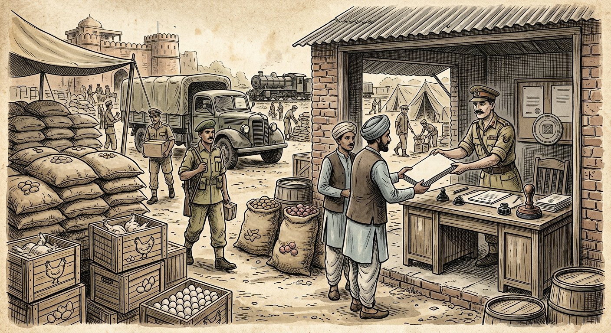

Topic 9: Remedies for Breach of Contract — Damages, Remoteness, Penalty & Earnest Money
Indian Contract Act, 1872 — Sections 73, 74 & 75 | Compensation for breach • Hadley remoteness rule • Measure at date of breach • Mitigation • Penalty vs liquidated damages • Earnest money • Interest & mental agony. Comprehensive deep notes strictly anchored in DU Case Material (2023) — Cases 33–38 (Book pp. 172–199) — with full statutory text, elements, illustrations, flowcharts, hypothetical case visuals, and DU-pattern PYQs with model answers.
📚 Primary source: DU Case Material LB-102 (2023)📜 Bare Act: ICA, 1872 (Ss. 73–75)⚖️ 6 DU cases in full IRAC++ format📝 12 PYQs + best model answers
Part A — The landscape
Remedies for breach — the master map
Breach of contract is the failure, without lawful excuse, to perform a contractual obligation (including anticipatory breach, S. 39). The victim (aggrieved party) is not helpless — the law gives a menu of remedies, of which damages under Ss. 73–75 ICA is the primary and default remedy. This Topic covers damages in depth; the other remedies are mapped here so you can place damages in context.
1. Contract broken (actual or anticipatory breach, S. 39)
3. Court grants relief to protect expectation + reliance
Remedy
What it gives
Governing law
When available
① Damages / compensation ⭐
Money putting the victim (as far as money can) in the position performance would have: expectation loss + foreseeable consequential loss.
Ss. 73–75 ICA (this Topic)
Always available as of right on proof of breach + loss. The default remedy.
② Rescission + damages
Victim puts an end to the contract and claims compensation for non-fulfilment (S. 75); must restore benefits (S. 64/65).
Ss. 39, 64, 65, 75 ICA
On breach going to the root / anticipatory breach accepted.
③ Specific performance
Court orders the promisor to actually perform (e.g. convey the land).
Specific Relief Act, 1963
Discretionary; classically where damages inadequate (land, unique goods).
④ Injunction
Court orders the promisor not to breach a negative stipulation (e.g. not to sing elsewhere).
Specific Relief Act, 1963
Negative covenants; balance of convenience.
⑤ Quantum meruit
Payment for work already done / benefit conferred under a contract that is discharged or void.
Ss. 65, 70 ICA (quasi-contract)
Part performance accepted; contract void/discovered void.
⑥ Restitution
Return of money/property paid under the contract (e.g. advance, deposit refund — Maula Bux).
Ss. 64, 65, 72 ICA
On rescission/voidness; subject to S. 74 set-off of reasonable compensation.
⭐ Exam anchor: DU questions on this Topic almost always test S. 73 (remoteness/measure) or S. 74 (penalty/earnest). Open every answer by stating the governing section verbatim, then apply its elements one by one to the facts, then cite the matching DU case (Hadley / Jamal / Karsandas for S. 73; Maula Bux / Hanuman for S. 74; Ghaziabad for interest & mental agony).
Terminology: ICA uses "compensation", not "damages" — in answers use "compensation/damages" interchangeably but quote the section's word "compensation". Liquidated damages = sum fixed in advance by parties; unliquidated = assessed by court (Ghaziabad, para 5).
Part B — The compensation section
S. 73 — Compensation for loss or damage caused by breach ⭐⭐⭐
S. 73, ICA (verbatim core). "When a contract has been broken, the party who suffers by such breach is entitled to receive, from the party who has broken the contract, compensation for any loss or damage caused to him thereby, which naturally arose in the usual course of things from such breach, or which the parties knew, when they made the contract, to be likely to result from the breach of it."
"Such compensation is not to be given for any remote and indirect loss or damage sustained by reason of the breach."
Second para (quasi-contract): failure to discharge an obligation "resembling those created by contract" (Ss. 68–72) attracts the same compensation as breach.
Explanation (mitigation): "In estimating the loss or damage arising from a breach of contract, the means which existed of remedying the inconvenience caused by the non-performance of the contract must be taken into account."
Elements the plaintiff must establish (checklist for answers)
1. Contract broken by defendant (actual/anticipatory)
3. Loss is recoverable Limb 1 (natural) OR Limb 2 (contemplated)
→
4. Not remote remote/indirect loss excluded
→
5. Mitigation adjusted Explanation: deduct avoidable loss
The two limbs of S. 73 (= Hadley's two rules)
Limb
Test
Knowledge needed
DU illustration / case
Limb 1 — "naturally arose in the usual course of things"
Objective: would this loss ordinarily follow such a breach, in the great multitude of cases? (Hadley: "in all probability".)
None special — deemed knowledge of ordinary consequences.
Ill. (a) saltpetre: contract–market difference. Ill. (l) builder (rent + rebuild). Hadley (Limb 1 failed on facts).
Limb 2 — "parties knew … likely to result"
Subjective: did both parties know at the time of contracting that this loss was a likely result of breach?
Special circumstances communicated to the defendant when the contract was made. Belated knowledge useless (Karsandas).
Ill. (j) (C told of B-contract → Rs 20,000 profit); Ill. (l) (A informed of B–C letting). Karsandas (Limb 2 failed — no disclosure in July 1952).
⚠️ Two classic exam traps: (1) Knowledge must exist "when they made the contract" — information given after contracting (Karsandas: October despatch instructions) cannot fix liability for special loss. (2) Ordinary vs special loss: a plaintiff who suffers an extraordinary loss without having disclosed the special facts recovers only ordinary (often nil) damages — Hadley recovered nothing beyond the £25 in court; Karsandas recovered nothing at all.
Measure = contract price vs market price at date of breach/due date. A sub-sale at extra profit the defendant did not know of is ignored (o) — Limb 2 needs communication.
Mitigation (Explanation) ⭐
(b) chartered ship — A must use available substitute conveyance, recovers only trouble/expense
Plaintiff must take reasonable available steps; only unavoidable loss recoverable. See Jamal + Part D.
Defective performance
(f) house repairs not to contract → cost of making conform
(k) is the Karsandas situation verbatim (SC said so); (j)/(l) show Limb 2 working when disclosure made; (i) shows even communicated plaintiffs can't recover uncommunicated sub-parts (Govt contract).
Too remote — barred
(n) late money → ruin: only principal + interest; (p) mill closed, defendant knew nothing of business; (q) late cloth for seasonal caps: price difference yes, lost cap profits + prep expenses no; (r) late ship: deposit + detention + extra fare yes, Sydney lost sum no
Conventional rule for money (n → Ghaziabad interest); no liability for claimant's undisclosed business model (p)/(q).
How to use illustrations in answers: DU examiners love "as in Illustration (k) to S. 73". Memorise: (b)=mitigation, (i)=Hadley-with-notice, (j)=disclosure works, (k)=Karsandas, (l)=full disclosure, (n)=money rule, (o)=unknown sub-sale ignored, (q)=seasonal profits too remote.
Part C — Remoteness
Remoteness of damages — the Hadley rule inside S. 73 ⭐⭐⭐
Remoteness = the legal filter deciding which losses are too distant from the breach to be compensated. S. 73's last line ("not … for any remote and indirect loss") codifies the rule laid down by Alderson B in Hadley v Baxendale (1854) — DU Case 33. The Privy Council in Jamal holds S. 73 "but declaratory" of this common-law right to damages.
Alderson B's rule (memorise): damages "should be such as may fairly and reasonably be considered as either arising naturally, i.e., according to the usual course of things, from such breach of contract itself, or such as may reasonably be supposed to have been in the contemplation of both parties at the time they made the contract as the probable result of the breach of it." — Rationale: "had the special circumstances been known, the parties might have specially provided for the breach … and of this advantage it would be very unjust to deprive them."
Q2: If special loss: Were special facts communicated & known to BOTH parties at contracting?
→
Yes → recoverable (Limb 2; Ill. j, l)
+
No → too remote Excluded (Hadley; Karsandas; Ill. k, p, q)
Refinements from the DU cases
Refinement
Authority in DU material
Exam use
Only communicated facts count — carrier knew merely "broken mill shaft + plaintiffs are millers"; consistent with spare shaft / other defects, so mill-stoppage profits not contemplated.
Hadley (Alderson B's counterfactuals)
Apply to any "carrier/delay" problem: list what defendant actually knew at contracting.
Time of knowledge = time of contract. October 1952 hint of export requirement was "belated"; liability depends on July 1952 knowledge. Plaint's vague "to the knowledge of defendant" + "very fancy price" letter = too slender.
Karsandas, paras 9–12
Kill Limb 2 wherever disclosure came after formation or was vague.
Contemplation = parties', not defendant's foresight of every consequence. Ill. (i): carrier told mill stopped → mill profits recoverable, but undisclosed Government contract still remote.
Ill. (i); Hadley "both parties"
Even with partial notice, uncommunicated sub-contracts stay remote.
Conventional rules (money/land) sit inside the same rule — both parties presumed to contemplate the conventional measure.
Hadley (money/title exceptions absorbed)
Links to Ill. (n) and Ghaziabad on interest.
Sub-sale profits unknown to defendant ignored; market price at breach date governs.
Ill. (o); Jamal (market price at 30 Dec 1911 conclusive)
Bridge to Part D (measure).
S. 73 second limb vs Hadley second limb: wording differs slightly ("knew … likely to result" vs "contemplation … probable result") but Indian courts treat them as identical — Karsandas applies S. 73 using Hadley reasoning, and Jamal treats Rodocanachi/Williams v Agius as good law for S. 73.
Part D — Quantification
Measure of damages — date of breach, market rule & mitigation ⭐⭐⭐
1. The assessment date: market value at the date of breach
For sale of goods/securities the measure is contract price minus market price at the date of breach (Ills. (a), (c), (d), (e), (g)). Jamal makes the date conclusive: loss = Rs 1,84,125-10 (contract) minus Rs 74,906-4 (23,500 shares @ 4s 3d on 30 December 1911) = Rs 1,09,218-12 — even though the seller later re-sold higher in a rising market.
Lord Wrenbury (Jamal): "If the seller holds on to the shares after the breach, the speculation as to the way the market will subsequently go is the speculation of the seller, not of the buyer … the seller cannot recover from the buyer the loss below the market price at the date of the breach if the market falls, nor is he liable to the purchaser for the profit if the market rises."
Breach date fixed (30 Dec 1911: tender + refusal)
→
Market price taken THEN (4s 3d; Rodocanachi / Williams v Agius)
→
Later sales irrelevant (seller's own speculation)
→
Buyer can't have it both ways (benefit of rises requires burden of falls — "impossible")
2. Mitigation — the duty to take reasonable steps (S. 73 Explanation)
"Undoubted law that a plaintiff who sues for damages owes the duty of taking all reasonable steps to mitigate the loss … and cannot claim … any sum which is due to his own neglect" (Jamal) — but "the loss to be ascertained is the loss at the date of the breach":
Mitigation principle
Authority
Meaning in practice
Mitigate at/around breach; defendant gets benefit of it
Ill. (b) (use substitute ship); Staniforth v Lyall (cited in Jamal)
Plaintiff must act reasonably (cover purchase/sale); proven mitigation reduces damages.
No duty to bet on post-breach market for defendant's benefit
Jamal (later re-sales at higher prices ignored)
Mitigation is judged at breach date; later windfalls/losses are plaintiff's own.
Collateral benefits don't reduce damages
Yates v Whyte; Bradburn v GWR; Jebsen (all cited in Jamal)
Benefit of an independent contract/insurance the plaintiff happens to hold is not credited to the defendant.
Optional resale clause ≠ election
Jamal (auction-sale clause; 30 Dec/2 Jan letters not an election; no auction ever held)
A contractual option to liquidate damages by resale, if not exercised, leaves the general market-price measure intact.
3. Special measures to quote
Situation
Measure
Source
Buyer refuses goods
Contract price minus market price at breach (Ills. c, d, h).
S. 73 ills.; Karsandas (nil where controlled prices equal)
Seller fails to deliver
Market price at due date minus contract price (Ills. a, e); vendor of land: market value at completion minus price.
S. 73 ills.; Ghaziabad para 6 (Chitty)
Delay in land conveyance
Value of use for delay period, usually rental value.
Ghaziabad para 6
Breach to pay money
Principal + interest only — ruin/consequential collapse too remote.
Ill. (n); Ghaziabad (interest)
Defective performance
Cost of making performance conform (Ill. f); builder: rebuild + lost rent + third-party compensation where disclosed (Ill. l).
S. 73 ills. (f), (l)
⚠️ Karsandas nil-damages logic (very examinable): contract Rs 100/ton (≈ Rs 70 controlled price + Rs 30 incidentals); controlled price identical in July 1952 and Jan 1953 → plaintiff could have covered at the same price → natural loss = nil, and special (export) loss unrecoverable for want of Limb-2 knowledge → suit dismissed though breach proved. Breach without recoverable loss = no compensation.
Part E — The penalty section
S. 74 — Compensation where penalty stipulated ⭐⭐⭐ (most litigated)
S. 74, ICA (subs. Act 6 of 1899 — quote first para verbatim): "When a contract has been broken, if a sum is named in the contract as the amount to be paid in case of such breach, or if the contract contains any other stipulation by way of penalty, the party complaining of the breach is entitled, whether or not actual damage or loss is proved to have been caused thereby, to receive from the party who has broken the contract reasonable compensation not exceeding the amount so named or, as the case may be, the penalty stipulated for."
Explanation: "A stipulation for increased interest from the date of default may be a stipulation by way of penalty."
Exception (public bonds): bail-bonds, recognizances, bonds for public duties → whole sum payable. Explanation: a contract with Government does not necessarily undertake a public duty (so Maula Bux's Govt supply contracts stayed under the main section).
Illustrations: (a) Rs 1,000 for default on Rs 500 → reasonable compensation ≤ Rs 1,000; (b) surgeon-in-Calcutta Rs 5,000 → reasonable ≤ Rs 5,000; (c) recognizance Rs 500 → whole penalty (Exception); (d) 12% jumping to 75% on default → penalty; (e) 10 maunds → 20 maunds on default → penalty; (f) loan instalments: whole becomes due on one default → NOT penalty, enforceable; (g) Rs 100 loan bonded as Rs 200 payable in instalments, whole due on default → penalty.
The Fateh Chand v Balkishan Dass (1964) 1 SCR 515 doctrine (via Maula Bux & Hanuman)
S. 74 deals with two classes: (i) sum named to be paid on breach; (ii) "any other stipulation by way of penalty" — which "comprehensively applies to every covenant involving a penalty, whether it is for payment on breach … of money or delivery of property in future, or for forfeiture of right to money or other property already delivered." Consequences:
Fateh Chand rule
Effect
S. 74 covers forfeiture of amounts already paid, not just sums to be received — old HC view (Natesa Aiyer; Singer Mfg; Manian Pattar) overruled.
Security deposits, advances, instalments forfeited on breach all fall under S. 74 (Maula Bux).
Duty statutorily imposed on courts: never enforce the penalty — award only reasonable compensation ≤ named sum/penalty.
Court must assess reasonableness; cannot award the whole sum mechanically (Maula Bux: HC's Rs 18,500 award set aside).
Applies whoever sues — jurisdiction doesn't turn on "the accidental circumstance of the party in default being plaintiff or defendant."
Defaulter suing for refund (Maula Bux, Hanuman) equally gets S. 74 protection.
Genuine earnest money is outside S. 74 (Fateh Chand: Rs 1,000 earnest forfeited; Rs 24,000 balance judged under S. 74).
Characterisation (earnest vs security/part-payment) decides everything — see Part F.
"Whether or not actual damage or loss is proved" — the Maula Bux clarification ⭐
Shah Ag. CJ (Maula Bux, para 8): the phrase "is intended to cover different classes of contracts … In case of breach of some contracts it may be impossible for the Court to assess compensation arising from breach, while in other cases compensation can be calculated in accordance with established rules. Where the Court is unable to assess the compensation, the sum named by the parties if it be regarded as a genuine pre-estimate may be taken into consideration as the measure of reasonable compensation, but not if the sum named is in the nature of a penalty. Where loss in terms of money can be determined, the party claiming compensation must prove the loss suffered by him."
Can money loss be determined? (e.g. cover purchases at market rates)
→
YES → must PROVE loss No evidence = no retention (Maula Bux: Gov proved nothing → refund Rs 18,500)
/
NO (impossible to assess) → genuine pre-estimate may be taken as reasonable compensation — unless it's a penalty
Liquidated damages vs penalty — working test
Indicator
Genuine pre-estimate (liquidated damages) ✔
Penalty ✘
Relation to likely loss
Rough, honest forecast of probable loss at contracting (e.g. Ill. b — surgeon clause; delay per-day charges tied to rent).
Extravagant/unconscionable vs conceivable loss; terrorising sum to coerce performance (Ills. a, d, e, g).
Single lump sum for varied breaches
—
Same huge sum for trivial or grave breaches suggests penalty.
Legal result under S. 74
Still only a cap — court awards reasonable compensation ≤ sum; where assessment impossible, the sum may be taken as the measure (Maula Bux).
Never enforced; court awards only proved/reasonable compensation (Maula Bux).
Name given by parties
Not conclusive — court looks at substance ("penalty" / "liquidated damages" labels don't decide).
Model S. 74 answer skeleton: (1) Quote S. 74 + identify class (i) sum named / class (ii) penalty stipulation incl. forfeiture (Fateh Chand). (2) Characterise the amount — earnest (outside S. 74, Part F) or security/advance (inside). (3) Apply Maula Bux proof rule: loss determinable? → evidence needed; impossible? → genuine pre-estimate may be taken. (4) Conclude: reasonable compensation ≤ cap; excess refunded (with interest — Maula Bux 3%).
Part F — Characterisation battle
Earnest money vs security deposit vs part-payment ⭐⭐⭐
Everything turns on character: reasonable earnest forfeited on the vendee's default is outside S. 74 (Hanuman; Fateh Chand); a security deposit or advance/part-payment forfeited on breach is inside S. 74 and only reasonable compensation can be retained (Maula Bux).
Classic definitions: Earl Jowitt — earnest is "a nominal sum (e.g. a shilling) as a token that the parties are in earnest." Chiranjit Singh v Har Swarup, AIR 1926 PC 1: "Earnest-money is part of the purchase price when the transaction goes forward: it is forfeited when the transaction falls through by reason of the fault or failure of the vendee."
The Hanuman Cotton five principles of earnest (para 21, Vaidialingam J.) — memorise
#
Principle
Applied in Hanuman
1
Earnest is paid at the time of the contract as a pledge/guarantee that the contract will be fulfilled.
Rs 2,50,000 = exactly 25% under cl. 9, expressly "as earnest money", no interest, "adjusted in the final bills"; cl. 10(b) gives "unconditional" forfeiture on default + cancellation + resale rights. Held: entirely earnest → forfeiture lawful → suit dismissed with costs. "Balance payable that day itself" language couldn't override express cls. 9–10 (Chiranjit Singh analogy: Rs 20,000 of Rs 1,65,000 treated as earnest).
2
It represents a guarantee for due performance — primarily a security for performance.
3
It is part of the purchase price when the transaction is carried out (adjusted against price).
4
It is forfeited when the transaction falls through by default/failure of the purchaser.
5
Unless contrary terms, the seller is entitled to forfeit on buyer's default (no need to prove loss).
Purchaser, as token of earnestness + performance guarantee (Hanuman cl. 9).
Contractor, as guarantee of due performance, liable to forfeiture on default (Maula Bux cl. 8).
Purchaser, as instalment of price (Fateh Chand Rs 24,000; Hanuman's failed contention).
Link to price
Becomes part of price only if transaction goes through.
Independent of price; held as security.
Price paid early, always adjustable.
Amount
Traditionally nominal/reasonable (Maula Bux; Fateh Rs 1,000). Hanuman: 25% upheld because reasonableness was never pleaded/proved — SC expressly reserved the point (paras 29, 31).
Any amount; retention capped at reasonable compensation (S. 74).
On buyer's default
Forfeited without proof of loss (unless penalty/unreasonable — plead + prove).
No → S. 74 Retain only reasonable compensation; refund rest
⚠️ Maula Bux trap: the HC called the contractor's deposits "earnest money" — the SC rejected this: a contractor's performance security is not a purchaser's earnest. And a sum "genuine pre-estimate" in name still needs proof of loss where loss is determinable — judicial notice of "1947–48 rising prices" couldn't substitute for evidence of cover rates.
Part G — S. 75, interest, feelings
S. 75, interest on refunds & mental agony ⭐⭐
S. 75: "A person who rightfully rescinds a contract is entitled to compensation for any damage which he has sustained through the non-fulfilment of the contract." Illustration: singer absent on 6th night → manager rescinds → compensation for non-fulfilment. — Links rescission (Ss. 39, 64–65: restore benefits) with damages.
Ghaziabad Development Authority v UOI, AIR 2000 SC 2003 — three holdings
Question
Holding (Lahoti J.)
Reasoning to quote
(i) Mental agony compensation?
NO — Rs 50,000 award set aside.
Settled contract law: "Normally, no damages in contract for injury to feelings, mental distress, anguish, annoyance, loss of reputation" — exception only for contracts to provide peace of mind / freedom from distress, or contemplated nervous shock/breakdown. Ordinary commercial/plot-allotment contracts excluded ("wrongfully dismissed employee" analogy).
(ii) Interest with no contract clause?
YES — in equity.
Sovintorg (1999): S. 34 CPC not directly applicable but "based upon justice, equity and good conscience" authorises fora to grant interest; "interest may also be awarded in lieu of compensation or damages." The brochure's no-interest clause applies only where the claimant itself caused the refund — here the Authority was at fault.
"Neither too high nor too low"; no evidence led on ideal rate; 12% just and proper.
Supporting principles (Ghaziabad paras 5–6, 8)
Brochure = invitation to offer; application = offer; acceptance per priority rules = contract. Performance/breach then governed by Contract Act + Specific Relief Act.
Object of damages: "to put the aggrieved party monetarily in the same position … as if the contract would have been performed" + remoteness filter (contemplation at contracting).
Land contracts: vendor in breach → market value at completion minus price; purchaser's special-use profit only with actual/imputed knowledge; delay → rental value.
Lucknow DA v M.K. Gupta (Rs 10,000 mental harassment) distinguished: liability fixed under administrative law (malafide/capricious exercise of power, recovery from officers' salary) — not contract law; no such pleading/finding here.
Link to Ill. (n), S. 73: late money → principal + interest only. Ghaziabad extends this to statutory-forum refunds: interest (12%) substitutes for unprovable damages. Also note the Article 14 point: HC held the one-sided no-interest term "unconscionable and arbitrary" — useful in unconscionability answers.
Part H — DU Case 33 (Book pp. 172–174)
DU Case 33 ★★ The remoteness rule itself — quoted in every S. 73 answer
Hadley v Baxendale, (1843–60) All ER Rep 460 (Court of Exchequer — Alderson B.)
S. 73 ICA (both limbs) | Question: Can millers recover lost mill profits for a carrier's 7-day delay in delivering a broken crankshaft? | Answer: No — profits neither natural consequence nor within parties' contemplation; special facts never communicated. (Rule nisi; new trial ordered.)
Hypothetical visual — Gloucester, May 1854: the broken mill shaft entrusted to Pickford & Co. for carriage to Greenwich; the mill stands idle behind.
Facts (detailed)
Parties & breakdown: Plaintiffs, millers/mealmen of City Steam Mills, Gloucester, worked their mill with a steam engine whose crankshaft broke, stopping the engine. They ordered a new shaft from W. Joyce & Co., Greenwich — but the broken shaft had to be sent to Greenwich as a pattern/model so the new one would fit.
Carriage contract: Defendants, common carriers (Pickford & Co.), Gloucester→Greenwich, accepted the shaft. Count 1: promised delivery on the second day after receipt; Count 2: within a reasonable time. Carriage paid: £2 4s. Plaintiffs' servant told the clerk "the mill was stopped and the shaft must be sent immediately"; clerk said goods sent by noon reach Greenwich next day; a special entry to hasten delivery was offered.
Breach & loss: Delivery delayed 7 days by neglect → new shaft delayed 5 days → mill idle: lost flour/sharps/bran profits, had to buy flour for customers, paid idle wages. Claimed £300.
Trial: Defendants denied Count 1, paid £25 into court on Count 2. Crompton J. left everything to the jury, which awarded £25 more. Defendants obtained rule nisi for new trial on misdirection, objecting the profit loss was too remote.
Issues
What is the proper rule for estimating damages on breach of contract to direct the jury?
Were the lost mill profits recoverable on the facts communicated to the carrier?
Plaintiffs (millers): the delay caused the stoppage and the profit loss; carrier knew the mill was stopped and urgency was stressed; jury's award should stand.
Defendants (carriers): profit loss too remote; never told the mill had no spare shaft or that this shaft was the pattern for replacement; liable only for ordinary delay consequences (covered by £25 in court).
Decision & reasoning (Alderson B.)
The rule (see Part C box): natural-consequence limb OR contemplation-of-both-parties limb; jury left without a definite rule produces "the greatest injustice" (Blake v Midland Rail; Alder v Keighley cited).
Application: only communicated facts = "broken shaft of a mill" + "plaintiffs were the millers." The famous counterfactuals: suppose plaintiffs had another shaft up/being put up and sent this one back to its maker; or the mill was defective in other respects — delay then causes no profit loss. In "the great multitude of cases" of millers sending shafts, stoppage would "not, in all probability" occur. Special circumstances were never communicated, so loss of profits "cannot reasonably be considered" within contemplation.
Money/title "exceptions" absorbed: parties presumed to contemplate the conventional rule — still the same principle.
Order: judge ought to have told the jury not to consider loss of profits at all → new trial.
Ratio / principle evolved: Recoverable contract damages = (1) loss naturally arising in the usual course, or (2) loss reasonably in contemplation of both parties at contracting — with the communication rule: undisclosed special circumstances cannot ground special damages. Codified in S. 73 ICA.
Exam use: cite Hadley for (i) the two-limb test, (ii) "contemplation of both parties at contracting", (iii) the spare-shaft counterfactual technique in carrier/delay problems, (iv) justification for S. 73's remoteness bar.
Part I — DU Case 34 (Book pp. 175–177)
DU Case 34 ★★ Assessment date + mitigation — the market-price rule
A.K.A.S. Jamal v Moolla Dawood, Sons & Co., (1915) 20 CWN 105 (Privy Council — Lord Wrenbury)
S. 73 ICA + Explanation | Question: Is the seller's damages fixed at the market price on breach date, or reduced by later profitable re-sales? | Answer: Fixed at breach-date market price (Rs 1,09,218-12); later re-sales are the seller's own speculation. (Appeal allowed.)
Hypothetical visual — Rangoon, December 1911: the seller tenders 23,500 British Burma Petroleum shares as prices collapse; the buyer refuses to pay.
Facts (detailed)
Six contracts, Apr–Aug 1911: appellant (seller) agreed to sell respondents (buyers) 23,500 shares (British Burma Petroleum Co.) for aggregate Rs 1,84,125-10; delivery 30 December 1911. Contract notes gave the seller an option on buyer's default: resell by auction ("at the Exchange at the next meeting") and recover any loss.
Breach, 30 Dec 1911: shares had "fallen largely"; seller tendered shares, demanded price, warning of public-auction resale "on or about the 2nd proximo … responsible for all losses." Buyers didn't pay; claimed a set-off on another transaction, sent cheques for Rs 75,925-10 and demanded transfer. 2 Jan 1912: seller repudiated set-off, gave notice of intended resale + suit.
Negotiations till 26 Feb 1912: seller demanded Rs 1,09,219-6 = contract price minus value @ 4s 3d/share (Rs 74,906-4). Suit 22 March 1912 for Rs 1,09,218-12 (same computation, trifling variance).
Actual re-sales: from 28 Feb 1912 seller sold all shares — one lot below 4s 3d (4s), one at 4s 3d, all others higher. Courts below credited buyers with the excess over breach-date market price, reducing damages. Seller appealed.
Issue
For sale of negotiable securities: is the measure contract-minus-market-price at breach date (mitigation judged then), or must the seller credit post-breach profitable re-sales?
Seller (appellant): loss crystallised 30 Dec 1911; resale clause a mere option to liquidate damages, never exercised (no auction ever held; Dec/Jan letters no election); later sales his own affair.
Buyers (respondents): seller's duty to mitigate means actual profitable re-sales reduced his loss; damages should reflect loss "generally".
Decision & reasoning (Lord Wrenbury)
Resale clause: only an option to "liquidate the damages by ascertaining the value … at the date of the breach by an auction sale"; seller selling his own shares, no duty to account. Letters of 30 Dec/2 Jan = no election; no auction ever held → "Nothing turns upon this provision."
Core holding: measure = difference at date of breach; seller bound to get best price at that date but not bound to reduce damages by subsequent sales — else buyer must also bear subsequent losses, which is "impossible". Post-breach market speculation is the seller's, not the buyer's.
Mitigation doctrine: duty to take "all reasonable steps" undoubted — but "the loss to be ascertained is the loss at the date of the breach" (Staniforth v Lyall). Collateral benefits (Yates v Whyte; Bradburn; Jebsen) not credited. Lower courts "begged the question" by reading "loss" as loss generally.
Rodocanachi v Milburn (market value at breach decisive; aff. Williams v Agius) applies equally to buyer's breach; "S. 73 is but declaratory" of this right.
Order: appeal allowed; judgment for plaintiff as per plaint; respondents pay costs below + appeal.
Ratio: (1) Damages for sale contracts = contract–market difference at breach date; post-breach price movements belong to the goods' holder. (2) Mitigation is judged at breach date; later windfalls needn't be credited. (3) An unexercised contractual option to measure damages by resale doesn't displace the general rule.
Exam use: cite Jamal for (i) assessment-date rule, (ii) "seller's speculation" quote, (iii) mitigation-at-breach + collateral-benefits rule, (iv) optional resale/cover clauses, (v) S. 73 declaratory of common law.
Part J — DU Case 35 (Book pp. 178–181)
DU Case 35 ★★ Belated knowledge + controlled prices = nil damages
Karsandas H. Thacker v Saran Engineering Co. Ltd., AIR 1965 SC 1981 (Raghubar Dayal J.)
S. 73 ICA; Ill. (k); Iron & Steel (Scrap Control) Order, 1943 | Question: Can a buyer recover export-market losses where the seller never knew at contracting that goods were for export? | Answer: No — belated/export knowledge fails Limb 2; controlled prices equal → natural loss nil. (Appeal dismissed with costs.)
Hypothetical visual — 1952–53: scrap iron contracted domestically, then diverted to an export sub-sale the seller never knew of.
Facts (detailed)
Main contract (correspondence, June–July 1952): appellant agreed to buy 200 tons scrap iron @ Rs 100/ton from respondent. No disclosure that scrap was for export — appellant acted "principal to principal".
Sub-contract (25 Oct 1952): appellant meanwhile agreed to supply 200 tons to Export Corporation, Calcutta for export. First indirect hint to respondent came late October 1952 (despatch to Export Corporation). Appellant admitted in cross-examination he spoke of Export Corporation only after negotiations closed 25 July 1952.
Breach (30 Jan 1953): respondent expressed inability to deliver. Export Corporation covered from the open (export) market and recovered the difference from appellant, who sued respondent for Rs 20,700 (difference between Export Corporation's cover price and his contract price).
Defence: no completed contract; no damages — controlled price identical (July 1952 = 30 Jan 1953); export purpose never disclosed.
Below: Trial Court decreed; High Court reversed (completed contract 25 Oct 1952 but breach excused by appellant's laches + no damages as controlled prices equal); certificate under Art. 133(1)(a) → SC.
Issues
Did the Scrap Control Order / controlled price apply to export sales?
Was the appellant entitled to export-market difference as damages under S. 73?
Appellant: Control Order covered only domestic sales (relied on 1954 Controller letters: "no statutory price for export"); his loss = Export Corp. cover difference; respondent knew of export ("very fancy price" letter of 9 June 1952; Oct 1952 despatch; plaint para 7).
Respondent: export purpose never disclosed at contracting; controlled price same at both dates → no loss; principal-to-principal purchase.
Decision & reasoning (Raghubar Dayal J.)
Control Order applied (paras 4–8): nothing in Defence of India Rules r. 81, Essential Supplies Act S. 3(1), the Order, or Notification SRO 1007 (30-6-1951) excluded exports; cl. 8(4) barred any person selling/acquiring above notified prices — even from uncontrolled sources. 1954 letters spoke of 1954, not 1952, and conceded export needed permission.
Quantum — Limb 2 fails (paras 9–12): export-basis damages require respondent's knowledge "at the time it entered into the contract"; October inference was "belated"; plaint para 7 didn't fix the time of knowledge; "very fancy price" offer merely meant a good price within the control ceiling ("lowest prices" asked) — "very remote and slender basis". Appellant's own evidence destroyed his case.
Limb 1 = nil (para 13): Rs 100 ≈ Rs 70 controlled + Rs 30 incidentals; appellant could have covered at the same controlled price → "he did not stand to pay a higher price … therefore he could not have suffered any loss." Export-contract loss was not naturally arising.
Ill. (k) "apt" (para 14): substitute-difference recoverable, third-party compensation not — without disclosure. Formation/breach issues left undecided (para 16).
Order: appeal dismissed with costs.
Ratio: (1) Under S. 73, special-circumstance knowledge must exist at formation; later-acquired knowledge is irrelevant. (2) Where cover was available at the same price, natural damages are nil — breach alone doesn't create compensation. (3) Ill. (k) governs undisclosed sub-sale losses.
Exam use: the go-to authority for (i) "knowledge when they made the contract", (ii) belated/vague disclosure, (iii) nil natural loss via equal cover price, (iv) quoting Ill. (k).
Part K — DU Case 36 (Book pp. 182–185)
DU Case 36 ★★ S. 74 proof-of-loss rule — security deposit ≠ earnest
Maula Bux v Union of India, AIR 1970 SC 1955 (Shah Ag. CJ)
S. 74 ICA; Fateh Chand v Balkishan Dass | Question: Can Government forfeit Rs 18,500 security deposits without proving any loss? | Answer: No — deposits were security (not earnest) under S. 74; determinable loss must be proved; none was. (HC set aside; refund Rs 18,500 + 3%.)

Hypothetical visual — 1947, Military HQ (U.P. Area): potato/poultry supply contracts backed by cash security deposits, forfeited on persistent default.
Facts (detailed)
Contracts (20 Feb 1947): plaintiff agreed to supply potatoes (and under parallel contracts poultry, eggs, fish) at Military Headquarters, U.P. Area; deposited Rs 10,000 (potato) + Rs 8,500 (poultry) "as security for due performance". Cl. 8: on rescission for neglect/delay/failure, "my/our security deposit (or such portion thereof as the officer … shall consider fit) shall stand forfeited" + Government may recover extra expense of cover purchases.
Default: plaintiff persistently failed "regular and full supplies" → Government rescinded and forfeited the deposits.
Suit: Civil Judge, Lucknow — refund Rs 20,000 + 6%. Trial Court decreed: rescission justified but no evidence at all of loss → no forfeiture. Allahabad HC modified: awarded only Rs 416.25 + 3% — held S. 74 inapplicable to "not unreasonable" security forfeiture (earnest-money analogy; Fateh Chand didn't overrule the "trend"); alternatively Rs 10,000/Rs 8,500 were "not exceeding reasonable compensation" — taking judicial notice of 1947–48 rising prices, scarcity, daily inconvenience.
Plaintiff appealed by special leave.
Issues
Were the deposits earnest money (outside S. 74) or security attracting S. 74?
Could Government retain them as genuine pre-estimate / reasonable compensation without proving loss?
Plaintiff: no loss proved → forfeiture penal → refund under S. 74 (Fateh Chand).
Union: deposits = earnest; alternatively genuine pre-estimates covered by "whether or not actual damage … proved"; HC's judicial-notice assessment was fair.
Decision & reasoning (Shah Ag. CJ)
Not earnest (para 4): earnest = purchaser's nominal token toward price (Jowitt; Chiranjit Singh). Contractor's performance security "cannot be regarded as earnest-money."
S. 74 applies to forfeiture of deposits (paras 5–6): old English-coloured view (Natesa Aiyer; Singer; Manian Pattar) "no longer good law" after Fateh Chand — "any other stipulation by way of penalty" covers forfeiture of money already delivered; courts have a statutory duty to award only reasonable compensation.
Earnest exception stated (para 7): forfeiture of reasonable earnest (Chiranjit; Roshan Lal; Habibullah; Bishan Chand) "does not amount to imposing a penalty" — but penalty-natured forfeiture attracts S. 74.
"Whether or not proved" construed (para 8): only dispenses proof where assessment is impossible (then genuine pre-estimate may be taken, unless penal); where money loss determinable, it must be proved. Government could have proved cover rates + incidentals but "no such attempt was made" (para 9).
Order: HC decree set aside; UOI to pay Rs 18,500 + 3% from suit till payment; each party to bear own costs (plaintiff was in breach; military inconvenience real).
Ratio: (1) Performance security deposits are not earnest money; their forfeiture is judged under S. 74. (2) "Whether or not actual damage proved" ≠ licence to retain without evidence — where loss is determinable, proof is mandatory. (3) Judicial notice can't substitute for cover-rate evidence.
Exam use: cite Maula Bux for (i) earnest-vs-security test, (ii) Fateh Chand's S. 74 scope, (iii) the proof rule — the single most-quoted S. 74 proposition, (iv) refund + interest outcome.
Part L — DU Case 37 (Book pp. 186–195)
DU Case 37 ★★ Earnest-money charter — 25% forfeiture upheld
Shri Hanuman Cotton Mills v Tata Air Craft Ltd., 1969 (3) SCC 522 (Vaidialingam J.)
S. 74 ICA; earnest-money principles; Fateh Chand distinguished | Question: Was Rs 2,50,000 (25%) earnest money forfeitable on the buyer's admitted breach, or part-payment/penalty under S. 74? | Answer: Earnest under express cls. 9–10; unconditionally forfeitable; S. 74 not attracted. (Appeal dismissed with costs.)
Hypothetical visual — Panagarh, November 1946: 4,000 tons of aero-scrap in Dump No. 1 sold for Rs 10 lakhs against a 25% earnest deposit.
Facts (detailed)
The deal (Nov 1946): Appellants (dealers in new/second-hand machinery) answered respondent's newspaper ad for aero-scrap. After discussion, respondent's 18 Nov 1946 letter confirmed sale of the entire lot in Dump No. 1, Panagarh (~4,000 tons) for Rs 10,00,000, acknowledging Rs 2,50,000 by cheque, balance "that day itself" + sales tax — expressly incorporating the Company's Terms of Business.
Acceptance with instalments: Appellants' same-day reply confirmed but offered balance in two instalments (Rs 2,50,000 by 22 Nov + Rs 5,00,000 by 14 Dec 1946), delivery after full payment. Respondent's 20 Nov letter accepted the modification, other terms as before.
Repudiation (22 Nov 1946): Appellants claimed the deal closed without inspection on assurance of ~4,100 tons, now doubting quantity — sought cancellation + refund. Respondent repeatedly demanded payment/delivery; appellants refused → respondent forfeited Rs 2,50,000 as earnest money, cancelled, and resold (claiming Rs 42,499 further loss).
Key clauses:Cl. 9 (Deposits): buyer deposits 25% "as earnest money", adjusted in final bills, no interest. Cl. 10(b): on payment default the Company may "forfeit unconditionally the earnest money", cancel, resell, recover loss/storage/expenses; resale profit belongs to Company.
Suit 2745/1947 (Calcutta Original Side): refund + 6%. Plaintiffs pleaded no concluded contract / misrepresentation / defendants not ready and willing / money had and received. Before the HC all pleas were conceded or given up (breach admitted; concluded contract via 18–20 Nov letters admitted) — only 2 surviving questions: (1) part-payment or earnest deposit? (2) right to forfeit? Single Judge + Division Bench: earnest → forfeitable → suit dismissed.
Issues (as argued in SC)
Was Rs 2,50,000 part of the price or earnest deposit?
If earnest, does S. 74 (sum named / penalty stipulation) limit forfeiture to reasonable compensation — is 25% unreasonable?
Appellants (Maheshwari): (1) "against which … balance" language shows part-payment. (2) Rs 2.5 lakh is a sum named / penalty stipulation → only reasonable compensation under S. 74 (Fateh Chand; Maula Bux); 25% is unreasonable for earnest.
Respondents (Attorney-General): (1) Correspondence + cls. 9–10 expressly say "earnest money"; earnest = part of price when performed, forfeited when vendee defaults. (2) S. 74/penalty/unreasonableness never pleaded or evidenced below (appellants led no evidence) — can't be raised now; no unreasonableness question arises on contractual earnest forfeiture anyway.
Decision & reasoning (Vaidialingam J.)
Earnest — contention 1 fails (paras 22–26): cl. 9's three markers ("as earnest money", no interest, adjusted in final bills) + 25% = earnest; "balance that day" language can't override incorporated Terms (accepted in reply); Chiranjit Singh (Rs 20,000 of Rs 1,65,000 treated as earnest) supports substance over receipt language. With breach conceded, cl. 10(b) entitled respondents to forfeit.
S. 74 — contention 2 not entertainable (paras 27–31): penalty/unreasonableness never pleaded, never evidenced — respondents had no chance to meet it. Court "expresses no opinion" on whether unreasonableness can ever attach to earnest forfeiture or its factors. Maula Bux distinguished: there the deposits were not earnest at all, so S. 74 necessarily applied; Maula Bux "had no occasion" to test earnest reasonableness.
Fateh Chand distinguished (paras 32–34): there Rs 1,000 earnest was allowed to be forfeited and only the non-earnest Rs 24,000 went to S. 74 — "[i]n the case before us the entire amount … is earnest money and therefore the above decision does not apply."
Order: appeal dismissed with costs.
Ratio: (1) The five earnest principles (Part F table) — amount expressly deposited "as earnest" under cl. 9-type terms is forfeitable on buyer's default without proof of loss. (2) Plead-and-prove rule: penalty/unreasonableness attacks on earnest must be pleaded with foundation + proved by evidence; courts won't entertain them for the first time in appeal. (3) Maula Bux and Fateh Chand apply only to non-earnest sums.
Exam use: cite Hanuman for (i) the 5 earnest principles, (ii) "entire amount earnest → S. 74 doesn't apply", (iii) the pleading/evidence burden — perfect against afterthought S. 74 pleas, (iv) distinguishing Maula Bux (security) from earnest cases.
Part M — DU Case 38 (Book pp. 196–199)
DU Case 38 ★★ Interest in equity + no mental-anguish damages in contract
Ghaziabad Development Authority v Union of India, AIR 2000 SC 2003 (Lahoti J.)
Damages object + remoteness; S. 34 CPC (equity); | Questions: (i) Mental-agony compensation? (ii) Interest without contract? (iii) Rate? | Answers: (i) No (Rs 50,000 set aside); (ii) Yes, in equity; (iii) 12% p.a. (18% reduced).
Hypothetical visual — Indirapuram Scheme: allottees wait years for plots that never materialise; fora order refunds with interest.
Facts (detailed)
Batch appeals: GDA (U.P. Urban Planning & Development Act, 1973, S. 4) floated plot/flat schemes; allottees complained of failure/unreasonable delay before the MRTP Commission, Consumer Fora, and (2 cases) the Allahabad HC (Art. 226). All fora found GDA in breach and ordered refund + interest.
Flashpoints: (a) Brochure term: no interest if applicant withdraws/surrenders — HC struck it as unconscionable, arbitrary, Art. 14-violative, awarding 12%. Other fora awarded 18%. (b) In C.A. 8316/1995 (Brijesh Mehta — Indirapuram Scheme, 35 sq.m plot, Rs 4,20,000), MRTP Commission added Rs 50,000 for "mental agony" for non-delivery after "unavoidable reasons"/incomplete development.
Issues
Can compensation be awarded for mental agony?
Can interest be awarded absent any contract/promise/statute?
If so, at what rate?
GDA: no contract/statute supports interest; mental-anguish damages unknown to contract law; brochure bars interest; 18% excessive.
Claimants: relied on Sovintorg v SBI (1999) (12%→15% by SC) + S. 34 CPC (bank commercial rates) for interest; on Lucknow DA v M.K. Gupta (Rs 10,000 mental harassment) for anguish damages.
Decision & reasoning (Lahoti J.)
Contract framework (para 5): brochure = invitation to offer; application = offer; acceptance per priority = contract; breach governed by Contract Act + Specific Relief Act. Damages = liquidated (pre-fixed) or unliquidated (assessed); object = put victim "in the same position … as if performed"; remoteness = contemplation at contracting; liable party compensates directly flowing losses.
(i) No mental-anguish damages (paras 5, 7–8): Settled contract law — no contract damages for "feelings, mental distress, anguish, annoyance, reputation" except peace-of-mind contracts or contemplated nervous shock/breakdown; Court of Appeal refuses them to wrongfully dismissed employees / "ordinary commercial contract". Rs 50,000 set aside. Lucknow DA distinguished: that award rested on administrative law (malafide/capricious power, recovery from officers' salaries) — no such pleading/finding here.
Land measures noted (para 6): vendor's breach → market value at completion minus price; special-use profit only with knowledge; delay → rental value.
(ii)–(iii) Interest 12% in equity (paras 9–10): no express/implied interest contract; no enabling provision cited; S. 34 CPC not directly applicable — but per Sovintorg, its basis in "justice, equity and good conscience" authorises interest, including "in lieu of compensation or damages". Sovintorg's 15% distinguished (winding-up there). No evidence on ideal rate → 12% "just and proper … neither too high nor too low". No-interest brochure clause only where claimant itself caused the refund; here the Authority was at fault.
Orders: Rs 50,000 mental-anguish award set aside; all 18% directions → 12% p.a.; appeals + contempt petitions disposed.
Ratio: (1) No damages for mental distress in ordinary/commercial contracts (peace-of-mind contracts excepted). (2) Interest may be awarded in equity (S. 34 CPC's equitable basis; in lieu of damages) even without contract — 12% as the just default. (3) One-sided no-interest clauses don't protect a defaulting authority.
Exam use: cite Ghaziabad for (i) object of damages + remoteness restatement, (ii) Settled contract mental-anguish bar + Lucknow DA distinction, (iii) equitable interest reasoning, (iv) brochure/offer/acceptance analysis, (v) land-damage measures.
Part N — Visual revision
Master flowcharts & comparison tables
Flowchart 1 — Any S. 73 damages problem (5 steps)
1. Breach? Who broke what obligation?
→
2. Causation? Loss "caused thereby"?
→
3. Limb 1? Natural in usual course? → allow
→
4. Else Limb 2? Special facts known to BOTH at contracting? → allow, else remote
→
5. Mitigation? Deduct avoidable loss (Explanation); assess at breach date (Jamal)
Flowchart 2 — Any S. 74 / forfeiture problem (4 steps)
1. Characterise Earnest? (Hanuman 5 tests) → outside S. 74, forfeit if reasonable
→
2. Else S. 74 Sum named or penalty stipulation (incl. forfeiture — Fateh Chand)?
→
3. Loss provable? Yes → claimant MUST prove (Maula Bux); No → genuine pre-estimate may be taken
→
4. Award Reasonable compensation ≤ cap; refund excess (+ interest)
Table 1 — Six DU cases at a glance
Case
Section
One-line rule
Outcome
33. Hadley
S. 73
Natural OR bilaterally-contemplated loss only; undisclosed specials excluded.
New trial; profits excluded
34. Jamal
S. 73 + Expl.
Contract–market at breach date; post-breach speculation is seller's; mitigate then.
Appeal allowed; Rs 1,09,218-12
35. Karsandas
S. 73, Ill. (k)
Knowledge must exist at formation; equal cover price → nil natural loss.
Appeal dismissed
36. Maula Bux
S. 74
Security ≠ earnest; determinable loss must be proved; no evidence → refund.
No mental-anguish damages in ordinary contracts; 12% interest in equity.
Rs 50,000 set aside; 18%→12%
Table 2 — S. 73 vs S. 74
Point
S. 73 (unliquidated)
S. 74 (liquidated/penalty)
Trigger
Breach simpliciter; court assesses loss.
Breach + sum named / penalty stipulation (incl. forfeiture clauses).
Measure
Natural or contemplated loss; remote excluded; mitigation adjusted.
Reasonable compensation ≤ named sum/penalty; never the penalty as such.
Proof
Plaintiff proves loss + causation + (for specials) communication.
"Whether or not proved" helps only where assessment impossible; else proof needed (Maula Bux).
Cap
No cap (full recoverable loss).
Capped at named sum/penalty.
Lead cases
Hadley, Jamal, Karsandas.
Maula Bux, Hanuman, Fateh Chand.
Table 3 — Remoteness outcomes (predict any problem)
Loss type
Disclosed at contracting?
Result
Authority
Ordinary market difference
Not needed
✅ Recoverable (Limb 1)
Ills. (a)–(h); Jamal
Sub-sale / special-use profit
Yes, to both parties
✅ Recoverable (Limb 2)
Ills. (j), (l)
Sub-sale / special-use profit
No / belated / vague
❌ Too remote
Hadley; Karsandas; Ills. (k), (o), (p), (q)
Third-party compensation paid
Yes
✅ Recoverable
Ills. (l), (m)
Third-party compensation paid
No
❌ Too remote
Ill. (k); Karsandas
Mental distress / ruin from late money
—
❌ Barred (money: principal + interest only)
Ill. (n); Ghaziabad
Part O — Practice
DU PYQs with best model answers (Q1–Q12)
Q1. State and explain the rule in Hadley v Baxendale. How far is it embodied in S. 73 of the Indian Contract Act? (10 marks)
Model answer: (1) State Alderson B's two-limb rule verbatim + rationale (parties deprived of chance to provide specially). (2) Map onto S. 73: "naturally arose" = Limb 1; "parties knew … likely to result" = Limb 2; "remote and indirect" bar = the filter. (3) Jamal: S. 73 "but declaratory" of this common law. (4) Illustrate: Hadley facts (spare-shaft counterfactuals) for Limb failure; Ills. (j)/(l) for Limb 2 success; Karsandas for timing of knowledge. (5) Conclude: Hadley is the interpretive key to S. 73 — cite it in every remoteness answer.
Q2. A consigns a broken machine part to a carrier for urgent delivery to the manufacturer, saying only that "the factory is closed for want of it." Delivery is delayed; A loses a lucrative government order. Advise the carrier. (10 marks)
Model answer: This is Ill. (i) + Hadley combined. (1) Factory-closure profits: carrier was told the factory is stopped → within contemplation → recoverable (average mill profits — Ill. i). (2) Government order: a further undisclosed sub-contract → too remote even though partial notice given (Ill. i: "not the loss … through the Government contract"). (3) Hadley contrast: there even mill profits failed because nothing disclosed urgency's consequence. Advise: admit ordinary delay loss, contest the government-order claim as remote under S. 73.
Q3. "The loss to be ascertained is the loss at the date of the breach." Discuss with reference to Jamal v Moolla Dawood. (10 marks)
Model answer: (1) Facts in brief: 23,500 shares, breach 30 Dec 1911 @ 4s 3d, later re-sales higher, courts below credited buyer. (2) Lord Wrenbury: resale clause a mere unexercised option ("nothing turns upon it"); general measure = contract–market at breach (Rodocanachi; Williams v Agius). (3) "Seller's speculation" logic: buyer can't claim rises without bearing falls. (4) Mitigation (Explanation): duty real but judged at breach (Staniforth); collateral benefits ignored (Yates, Bradburn, Jebsen). (5) S. 73 declaratory. Conclude with decree Rs 1,09,218-12.
Q4. B agrees to supply goods to A at Rs 100/unit. B defaults. A had secretly contracted to resell at Rs 150/unit. A claims Rs 50/unit lost profit. Decide. (7 marks)
Model answer: Fails — Ill. (o) + Karsandas + Ill. (k). (1) Limb 1: only contract–market difference at breach recoverable; secret sub-sale profit is not natural loss. (2) Limb 2: "secretly" = no communication at contracting → not within parties' contemplation. (3) Karsandas: belated/undisclosed export purpose irrecoverable; Ill. (k): third-party/sub-sale losses need disclosure. A recovers only market difference (nil if market = Rs 100).
Q5. Discuss the duty to mitigate under the Explanation to S. 73. Is a plaintiff bound to accept a substitute offer from the defendant himself? (10 marks)
Model answer: (1) Explanation text: "means … of remedying the inconvenience … must be taken into account." (2) Jamal: duty "undoubted" but loss fixed at breach; Staniforth (mitigation at breach benefits defendant); Ill. (b) (take substitute conveyance). (3) Standard: reasonable steps only — not extraordinary sacrifice, risky ventures, or humiliating terms; question of fact. (4) Substitute offer from defendant: no absolute duty to accept (can't be forced to deal with a breaker on fresh terms), but unreasonable refusal of a reasonable mitigation avenue reduces recovery — argue both sides, conclude on facts. (5) Collateral contracts/insurance not credited (Bradburn line).
Q6. A builder delays a house A knows B will let to C; B loses rent and pays C compensation. What can B recover? (7 marks)
Model answer: This is Ill. (l) verbatim → B recovers all three: cost of rebuilding, lost rent, compensation paid to C. (1) Limb 1 covers rebuild cost (natural). (2) Rent + C-compensation covered by Limb 2: A was "informed of the contract between B and C" at contracting → within contemplation. Contrast Ill. (k)/Karsandas where non-disclosure bars third-party liability. Note: B must still mitigate (re-let/rebuild promptly — Explanation).
Q7. Explain S. 74. Distinguish liquidated damages from penalty. What is "reasonable compensation"? (15 marks)
Model answer: (1) Quote S. 74 + Explanation (increased interest) + Exception (public bonds) + key ills. (a)/(d)–(g). (2) Fateh Chand: two classes; "any other stipulation by way of penalty" includes forfeiture of paid sums; courts' statutory duty to award only reasonable compensation; applies whoever sues. (3) LD vs penalty: genuine pre-estimate vs extravagant in-terrorem sum; parties' label not conclusive; single sum for varied breaches suggests penalty. (4) "Reasonable compensation": court-assessed, ≤ cap; where assessment impossible, genuine pre-estimate may be taken; where determinable, must be proved (Maula Bux para 8). (5) Earnest exception (Hanuman/Fateh Chand Rs 1,000). Conclude with answer skeleton (Part E).
Q8. The Government forfeits a contractor's Rs 50,000 security deposit on breach but leads no evidence of loss, relying on "whether or not actual damage or loss is proved." Decide. (10 marks)
Model answer: Government loses — Maula Bux squarely. (1) Security deposit ≠ earnest (contractor's performance guarantee vs purchaser's token; Chiranjit Singh) → S. 74 applies (Fateh Chand: forfeiture of paid sums included). (2) The relied phrase covers only cases where assessment is impossible; cover-rate loss here is determinable → proof mandatory (para 8). (3) No evidence → no retention; judicial notice can't substitute. (4) Order: refund Rs 50,000 + interest (Maula Bux: 3% from suit). Each side bears own costs if breach admitted.
Q9. X pays Rs 1 lakh "as earnest money" (adjustable on completion, no interest, forfeitable on default) and then defaults. X sues for refund pleading only that it was "part-payment." Decide. (10 marks)
Model answer: X loses — Hanuman Cotton. (1) Apply 5 earnest principles: paid at contracting, performance guarantee, part of price only if performed (adjustable), forfeitable on purchaser's default, no contrary term → earnest, not part-payment ("against price" language can't override express terms — Chiranjit Singh). (2) Entirely earnest → S. 74 not attracted (Fateh Chand: Rs 1,000 allowed; only non-earnest Rs 24,000 went to S. 74). (3) No penalty/unreasonableness pleaded or evidenced → can't be raised (paras 28–29). Suit dismissed; forfeiture upheld. Contrast Maula Bux (security, not earnest).
Q10. A development authority delays possession of flats by 5 years. Allottees claim (a) refund with 18% interest, (b) Rs 1 lakh each for mental agony, relying on Lucknow DA v M.K. Gupta. The brochure bars interest. Decide. (15 marks)
Model answer: Ghaziabad DA governs. (1) Brochure = invitation; allotment = contract; breach → Contract Act damages (object: same position as if performed + remoteness). (2) (b) fails: Settled contract law — no mental-distress damages in ordinary commercial contracts (peace-of-mind contracts excepted); Lucknow DA distinguished — administrative-law award for malafide power (recovery from officers), no such pleading here. Set aside. (3) (a) partly succeeds: interest awardable in equity (Sovintorg; S. 34 CPC's justice-equity-good-conscience basis; in lieu of damages); no-interest clause only where claimant caused refund — authority at fault here; 18% → 12% p.a. (Sovintorg 15% distinguished). (4) Add: delay in land → rental value (para 6).
Q11. Distinguish among earnest money, security deposit, and part-payment, with legal consequences on breach. (10 marks)
Model answer: Draw the Part F three-way table. (1) Definitions: Jowitt + Chiranjit Singh (earnest = part of price if performed, forfeited if vendee defaults). (2) Hanuman 5 principles + cls. 9/10(b) application; 25% upheld but reasonableness reserved (pleading burden). (3) Maula Bux: contractor's security ≠ earnest → S. 74 → prove determinable loss → refund. (4) Fateh Chand: part-payment/advance (Rs 24,000) → S. 74. (5) Characterisation flowchart (contract language + function + timing). Conclude: label not conclusive; substance decides.
Q12. Write short notes on: (a) Illustration (k) to S. 73, (b) S. 75, (c) "Time of knowledge" under S. 73. (3×5 marks)
Model answer: (a) Machinery delayed; buyer covers at higher price (recoverable — natural) + pays third party for undisclosed sub-contract (irrecoverable — remote). SC in Karsandas called it "apt": mirrors undisclosed-export facts; pairs with Ill. (j) (disclosed → profit recoverable). (b) S. 75: rightful rescinder gets non-fulfilment damages (singer illustration); companion to Ss. 39/64/65 (election + restoration); rescission doesn't forfeit compensation. (c) S. 73 requires knowledge "when they made the contract" (Hadley: "at the time they made the contract"); Karsandas: October knowledge belated, July formation decisive; vague plaint averments + "fancy price" hints insufficient — must be specific, timely, bilateral.
Part P — Last-mile
One-page revision capsule + exam strategy
Must-quote line
Source
"Naturally arose … or which the parties knew, when they made the contract, to be likely to result" + "not … for any remote and indirect loss"
S. 73
"The means … of remedying the inconvenience … must be taken into account"
S. 73 Explanation (mitigation)
"Fairly and reasonably … arising naturally … or … in the contemplation of both parties at the time they made the contract"
Hadley (Alderson B)
"The loss to be ascertained is the loss at the date of the breach" / "speculation of the seller, not of the buyer"
Jamal (Wrenbury)
"Reasonable compensation not exceeding the amount so named … whether or not actual damage or loss is proved"
S. 74
"Where loss in terms of money can be determined, the party claiming compensation must prove the loss"
Maula Bux (Shah)
"Part of the purchase price when the transaction goes forward … forfeited when the transaction falls through"
Chiranjit Singh (via Hanuman/Maula Bux)
"No damages in contract for … mental distress …" except peace-of-mind contracts
Ghaziabad (Settled Contract Law)
⭐ Exam strategy: (1) Quote the section first — examiners award for verbatim S. 73/S. 74. (2) Run the Part N flowcharts step by step on the facts. (3) Name the illustration — (b)/(i)/(j)/(k)/(l)/(n)/(o) decide most problems. (4) Pair each proposition with its DU case + judge (Alderson, Wrenbury, Raghubar Dayal, Shah, Vaidialingam, Lahoti). (5) In S. 74 problems, characterise the amount before anything else (Hanuman vs Maula Bux). (6) Watch traps: belated knowledge, secret sub-sales, unpleaded penalty pleas, no-evidence retention, mental-anguish claims.
Topic 9 • Remedies for Breach (Ss. 73–75) • DU LLB LB-102 • Strictly from DU Case Material Cases 33–38 (Book pp. 172–199) + ICA bare text • End of notes — all the best for the exam! 🎓